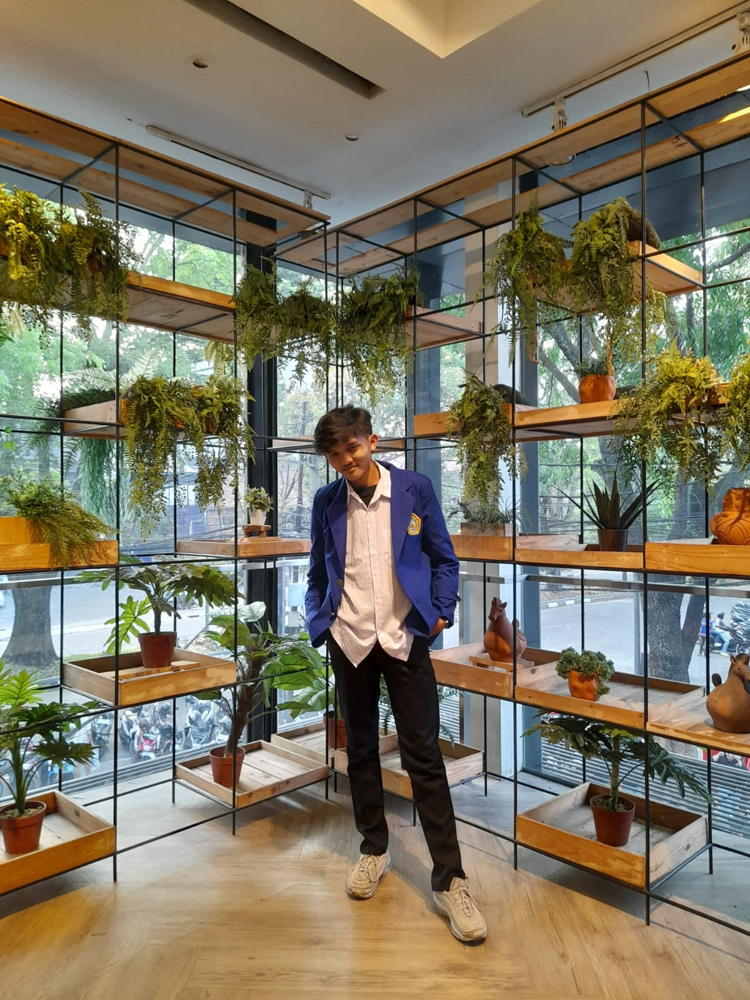

SPECS
Specs merupakan sebuah perusahaan sepatu asal Indonesia. Perusahaan ini didirikan pada tahun 1994 di Jakarta. Perusahaan ini menghasilkan berbagai macam perlengkapan olahraga lainnya. Perusahaan ini dikenal dan menjadi sponsor pemain sepak bola di Indonesia adalah Marko Šimić, Asnawi Mangkualam, Wawan Hendrawan,[1] Jandia Eka Putra, Maman Abdurrahman, Riko Simanjuntak, Ismed Sofyan, Dedik Setiawan, Wiljan Pluim, Marc Klok, Jaime Xavier dan masih banyak lagi.History Of Specs
SPECS is a sports company from Indonesia. The company was founded in 1994 in Jakarta. The company produces a wide range of sports equipment. The company is known for sponsoring Indonesian association football players and is a shirt club sponsor in the Liga 1.Apparel Specs
Apparel Specs adalah produk lokal pertama yang menjadi pelopor bagi brand lain untuk berkembang. Dimana produk Specs memulai industri apparel sejak tahun 1980-an. Pada masa itu, apparel lokal belum banyak mendapatkan simpati dari masyarakat maupun olahraga. Namun, seiring berkembangnya sistem baru, pada tahun 2005 barulah Specs dikenal oleh masyarakat dan olahraga. Specs mulai memproduksi jersey tim-tim lokal seperti Persija, Arema, dan Persipura. Kemudian seiring tingginya permintaan membuat Specs dikenal oleh tim-tim dari Asia, Timur Tengah, hingga Amerika Latin. Dimana Specs pernah menjadi sponsor jersey timnas Liberia, Puerto Rico, dan klub Al-Jazirah. Terbaru, apparel asal Jakarta ini sepakat untuk memproduksi jersey dari beberapa tim lokal hingga klub Asia Tenggara, Terengganu FA (Malaysia)Football
1.SPECS ACCELERATOR2.SPECS SWERVO
3.SPECS LIGHTSPEED
4.Selain beberapa seri di atas, masih ada banyak yang lainnya
Futsal
1.SPECS GALACTICA MORPH IN-VANILLA ICE/RICH GOLD2.SPECS ACCELERATOR LIGHTSPEED 4 CORE IN-FLINT GRAY/NEON AQUA
3.SPECS AEROFLYTE IN-CAPRI/LOST BLUE/SHOCKING PINK
4.Selain beberapa seri di atas, masih ada banyak yang lainnya
Profile

NAME : Ars'ael Mirat Dhiazahya HDT
NIM : 10123253
KELAS: IF-6